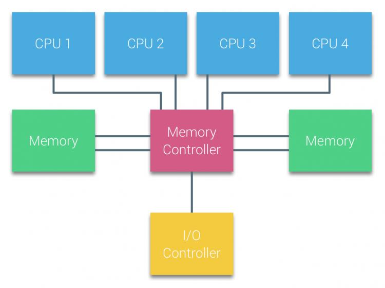
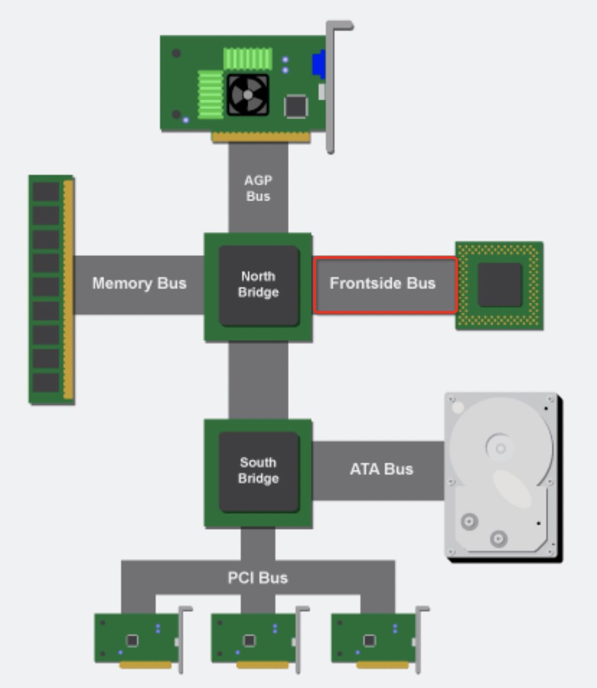
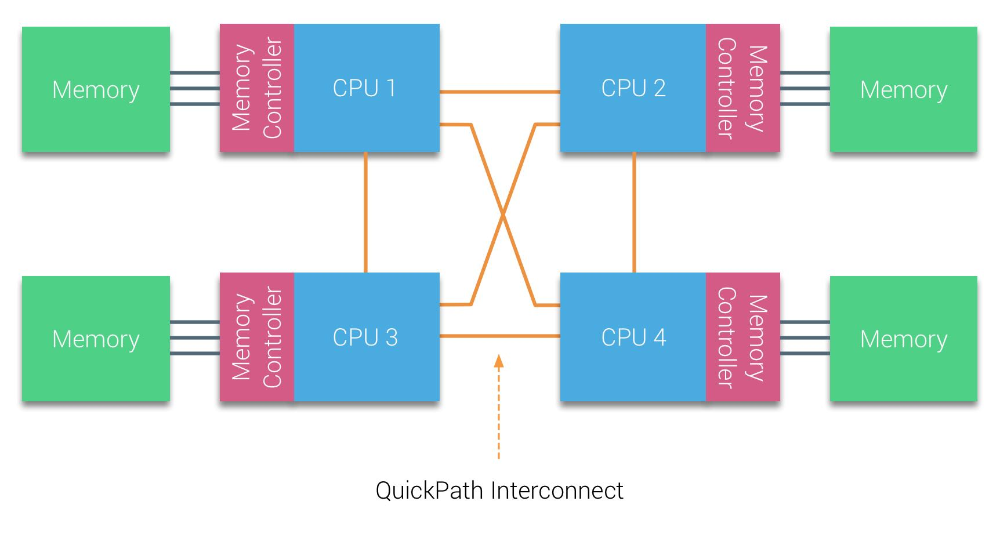
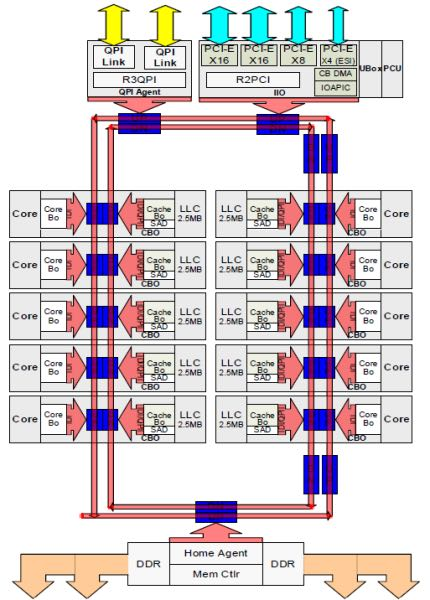
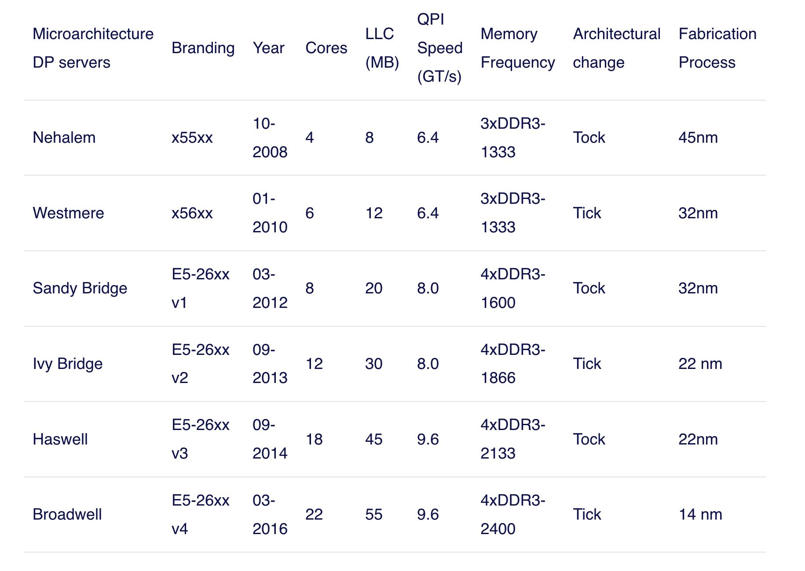

NUMA DEEP DIVE PART 1: FROM UMA TO NUMA
https://frankdenneman.nl/2016/07/07/numa-deep-dive-part-1-uma-numa/
https://plantegg.github.io/2021/06/01/CPU%E7%9A%84%E5%88%B6%E9%80%A0%E5%92%8C%E6%A6%82%E5%BF%B5/
很早之前CPU是通过system bus(front-side bus)连接北桥的memory controller来访问内存的，南桥和北桥相连，上面有io controller. 这种架构下面，所有的CPU都是通过system bus来访问内存的，所有CPU访问内存的延迟是相同的，所以称为UMA架构(uniform memory access)
 
With UMA systems, the CPUs are connected via a system bus (Front-Side Bus) to the Northbridge. The Northbridge contains the memory controller and all communication to and from memory must pass through the Northbridge. The I/O controller, responsible for managing I/O to all devices, is connected to the Northbridge. Therefore, every I/O has to go through the Northbridge to reach the CPU.
可能是随着CPU cores的数量增加，system bus上面的压力逐渐增大，没有办法做到很好的扩展性，开始引入NUMA架构(non-uniform memory access)。简单地说就是每个CPU有块自己的本地内存，也可以访问其他CPU负责的远程内存但是延迟更高，并且将memory controller模块也放在了CPU里面。CPU和CPU之间是通过QPI(QuickPath Interconnect)进行通信的，可以做到点到点之间的互联效果。（我理解这里的CPU是CPU socket/package, 而不是CPU dies/cores)

Nehalem微架构下使用了更加模块化的设计，将core和uncore的部分分开：core部分主要是负责计算，而uncore部分则负责非计算的所有事情：访问内存， cache-coherency, QPI, PCI-E等等 (https://en.wikipedia.org/wiki/Uncore) 。 QPI之间的通信速度单位是GT/s(giga transfer per second). 然后内存的channel width通常是2字节， 然后支持双向传输，所以带宽基本就是 6.4GT/s * 2B * 2 ~= 25.6GB/s
The Nehalem microarchitecture not only replaced the legacy front-side bus but reorganized the entire sub-system into a modular design for server CPU. This modular design was introduced as the “Uncore” and creates a building block library for caching and interconnect speeds. Removing the front-side bus improves bandwidth scalability issues, yet intra- and inter-processor communication have to be solved when dealing with enormous amounts of memory capacity and bandwidth. Both the integrated memory controller and the QuickPath Interconnects are a part of the Uncore and are Model Specific Registers (MSR) ). They connect to a MSR that provides the intra- and inter-processor communication. The modularity of the Uncore also allows Intel to offer different QPI speeds, at the time of writing the Intel Broadwell-EP microarchitecture (2016) offers 6.4 Giga-transfers per second (GT/s), 8.0 GT/s and 9.6 GT/s. Respectively providing a theoretical maximum bandwidth of 25.6 GB/s, 32 GB/s and 38.4 GB/s between the CPUs. To put this in perspective, the last used front-side bus provided 1.6 GT/s or 12.8 GB/s of platform bandwidth. When introducing Sandy Bridge Intel rebranded Uncore into System Agent, yet the term Uncore is still used in current documentation. You can find more about QuickPath and the Uncore in part 2.
对于Intel芯片来说，通常一个package里面就是一个die, 然后在这个die上面创建许多cores(比如26 cores). 理论上一个package里面也可能有多个die, die和die之间可以进行通信。我对这块搞的也不是特别清楚，我们就简单地理解只有一个die吧。一个die上的L3 Cache对于cores是共享的，而L1/L2 cache则是core private的。Sandy Bridge架构将L3从core中移除，放在了uncore部分，并且平均分配到每个core上，这样uncore部分可以更好地做cache coherency. 下面这个图还不是特别清楚，后面有张更大的图，以及解释其实每个部分：
- 中间的两个框线就是Ring Bus, 负责cores之间的通信
- 框线中间圈出来的部分就是uncore部分，这个部分详细内容后面有写。https://en.wikipedia.org/wiki/Uncore
- 框线中间圈出来的部分就是core部分
- 可以看到LLC被切分成为2.5MB均摊给每个core.

Each core had a private path to the L3 cache. Each path consisted of a thousand wires and you can imagine this doesn’t scale well if you want to decrease the nanometer manufacturing process while also increasing the cores that want to access the cache. In order to be able to scale, the Sandy Bridge Architecture moved the L3 cache out of the Uncore and introduced the scalable ring on-die Interconnect. This allowed Intel to partition and distribute the L3 cache in equal slices. This provides higher bandwidth and associativity. Each slice is 2.5 MB and one slice is associated with each core. The ring allows each core to access every other slice as well. Pictured below is the die configuration of a Low Core Count (LCC) Xeon CPU of the Broadwell Microarchitecture (v4) (2016).
"Uncore" is a term used by Intel to describe the functions of a microprocessor that are not in the core, but which must be closely connected to the core to achieve high performance.[1] It has been called "system agent" since the release of the Sandy Bridge microarchitecture.[2]
The core contains the components of the processor involved in executing instructions, including the ALU, FPU, L1 and L2 cache. Uncore functions include QPI controllers, L3 cache, snoop agent pipeline, on-die memory controller, on-die PCI Express Root Complex, and Thunderbolt controller.[3] Other bus controllers such as SPI and LPC are part of the chipset.[4]
Specifically, the microarchitecture of the Intel uncore is broken down into a number of modular units. The main uncore interface to the core is the so-called cache box (CBox), which interfaces with the last level cache (LLC) and is responsible for managing cache coherency. Multiple internal and external QPI links are managed by physical-layer units, referred to as PBox. Connections between the PBox, CBox, and one or more iMCs (MBox) are managed by the system configuration controller (UBox) and a router (RBox). [5]
Intel使用Tick-Tock模型发布自己的产品：Tick阶段进行优化以及缩减芯片制程，而Tock阶段则引入新的微架构。2016年已经有22个cores, LLC有55MB, QPI 9.6GTS.
With the introduction of the Nehalem microarchitecture in 2008, Intel moved away from the Netburst architecture. The Nehalem microarchitecture introduced Intel customers to NUMA. Along the years Intel introduced new microarchitectures and optimizations, according to its famous Tick-Tock model. With every Tick, optimization takes place, shrinking the process technology and with every Tock a new microarchitecture is introduced. Even though Intel provides a consistent branding model since 2012, people tend to Intel architecture codenames to discuss the CPU tick and tock generations. Even the EVC baselines lists these internal Intel codenames, both branding names and architecture codenames will be used throughout this series:

我们现在开发机器(2022)的106cores, 2sockets, HT, 每个socket上有26个cores, L3 36MB. Intel Xeon(Cascade Lake) Platinum 8269CY.
Architecture: x86_64 CPU op-mode(s): 32-bit, 64-bit Byte Order: Little Endian CPU(s): 104 On-line CPU(s) list: 0-103 Thread(s) per core: 2 Core(s) per socket: 26 Socket(s): 2 NUMA node(s): 2 Vendor ID: GenuineIntel CPU family: 6 Model: 85 Model name: Intel(R) Xeon(R) Platinum 8269CY CPU @ 2.50GHz Stepping: 7 CPU MHz: 3199.920 CPU max MHz: 3800.0000 CPU min MHz: 1200.0000 BogoMIPS: 5000.00 Virtualization: VT-x L1d cache: 32K L1i cache: 32K L2 cache: 1024K L3 cache: 36608K NUMA node0 CPU(s): 0-25,52-77 NUMA node1 CPU(s): 26-51,78-103